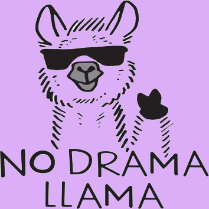
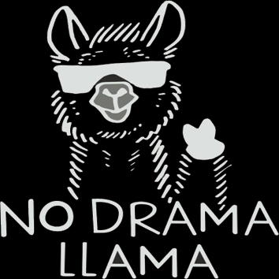

Llama
Uno de los mejores amigos de Kevin es la llama Daisy. Llama Daisy vive en Peru. Kevin la conoció durante uno de sus viajes. Daisy también comparte con nosotros sus pensamientos en las camisetas, las mochilas y otros productos de Mil pasos.


"She`s the best!" Agata